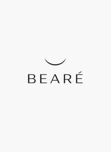

Trade Mark Journal No.2026/006 6 February 2026
UK00004326451 19 January 2026 (3,5)

- Class 3
- Lip balm; Lip balms; Lip balm [non-medicated]; Lip tints; Lip cream; Lip gloss; Lip balms [non-medicated]; Non-medicated lip balms; Lip gloss palettes; Lip glosses; Lip cosmetics; Lip makeup; Lip liner; Lip pomades; Lip conditioners; Lip rouge; Lip liners; Lip protectors [cosmetic]; Lip stains [cosmetics]; Lip coatings [cosmetic]; Lip pencils; Beauty balm creams; Lip coatings (Non-medicated -); Lip protectors (Non-medicated -); Lip stains for cosmetic purposes; Lip care preparations; Lipstick; Sun protectors for lips; Lip polisher; Lip neutralizers; Non-medicated lip care preparations; Eyebrow mascara; Hair balm; Cosmetic pencils for cheeks; Hair balms; Cheek rouges; Skin balms [cosmetic]; Eyebrow gel; Eyebrow cosmetics; Non-medicated balm for hair; Shaving balm; Eyeliner; Facial concealer; Shaving balms; Cosmetic preparations for the care of mouth and teeth; Eyebrow styling wax; Cheek colours; Cheek colors; Blemish balm creams; Eyebrow pencils; Pencils (Eyebrow -); Shave balm; Face blusher; Skin balms (Non-medicated -); Non-medicated skin balms; Eyebrow powder; Nail cream; Lipsticks; Nail makeup; Eye liner; Eye-shadow; Facial cream [for cosmetic use]; Eyebrow colors; Foot balms (Non-medicated -); Eyeshadow; Skin, eye and nail care preparations; Hair mascara; Eyelid pencils; Nail base coat [cosmetics]; Blush pencils; Eyelash tint; Cosmetic eye pencils; Face cream (Non-medicated -); Eyeliner pencils; Skin relief serum [cosmetic]; Eye concealers; Nail primer [cosmetics]; Eye makeup; Non-medicated mouth sprays; Skin cream [for cosmetic use]; Tooth polish; Mascara; Tooth powder [for cosmetic use]; Facial butters; Body and facial creams [cosmetics]; Nail polish top coat; Facial creams [cosmetic]; Facial creams [for cosmetic use]; Moisturising skin creams [cosmetic]; Facial cream; Gel eye masks; Facial makeup; Eyebrow colors in the form of pencils and powders; Moisturising body lotion [cosmetic]; Eye cream; Nail polish base coat; Body and facial butters; Eye make-up; Balms (Non-medicated -); Body mask cream; Tooth powders [for cosmetic use]; Hair care creams [for cosmetic use]; Liners [cosmetics] for the eyes; Face and body glitter; Blush; Eyelid shadow; Facial moisturisers [cosmetic]; Cosmetic eye gels; Eyelid doubling makeup; Face powder [for cosmetic use]; Skin cleansing cream [non-medicated]; Moisturising skin lotions [cosmetic]; Cuticle cream; Skin cleansing cream; Skin cleansing lotion; Moisturizing creams; Mattifying gel cream; Cosmetic nourishing creams; Skin lotion; Moisturizing body lotions; Moisturising gels [cosmetic]; Moisturising creams; Skin moisturizer; Skin moisturizer masks; Facial lotion; Skin cream; Refill packs for skin care cream dispensers; Moisturising creams, lotions and gels; Scented body lotions and creams; Skin recovery creams [cosmetics]; Hydrating creams for cosmetic use; Scented body creams; Shaving lotion; Moist wipes impregnated with a cosmetic lotion; Cosmetic creams for dry skin; Moisturizing preparations for the skin; Skin moisturiser; Skin care creams [cosmetic]; Cosmetic creams for skin care; Skin moisturizers used as cosmetics; Hand lotion (Non-medicated -); Skin creams [for cosmetic use]; Eye wrinkle lotions; Skin creams [cosmetic]; Non-medicated scalp treatment cream; Milky lotions for skin care; Skin care lotions [cosmetic]; Body mask lotion; After-sun lotions [for cosmetic use]; Non-medicated cleansing creams; Non-medicated skin creams; Skin creams [non-medicated]; Skin moisturizers; Whitening the skin (Cream for -); Cream for whitening the skin; Hair lotion; Non-medicated skin lotions; Gel scrub; Non-medicated skin serums; Cleansing balm; Aftershave moisturising cream; Cleansing cream; Cleansing creams [cosmetic]; Cosmetic creams for the skin.
- Class 5
- Medicated lip balm; Medicated lip balms; Medicated lip care preparations; Creams (Medicated -) for the lips; Medicated mouth spray; Face cream (Medicated -); Medicated balms; Analgesic balm; Foot balms (Medicated -); Multi-purpose medicated analgesic balms; Skin relief serum [medicated]; Moisturising body lotion [pharmaceutical]; Multi-purpose medicated mentholated salves; Gel scrub, medicated; Hand lotion (Medicated -); Baby bottom balms for medical purposes; Medicated skin lotions; Medicated skin creams; Skin care lotions [medicated]; Medicinal creams for the protection of the skin; Medicated face lotions; Medicated brush-on oral care gels; Moisturising creams [pharmaceutical]; Medicated after-shave lotions; Medicinal creams for skin care; Skin calming serum [medicated].
Tzyy Jiun Liew